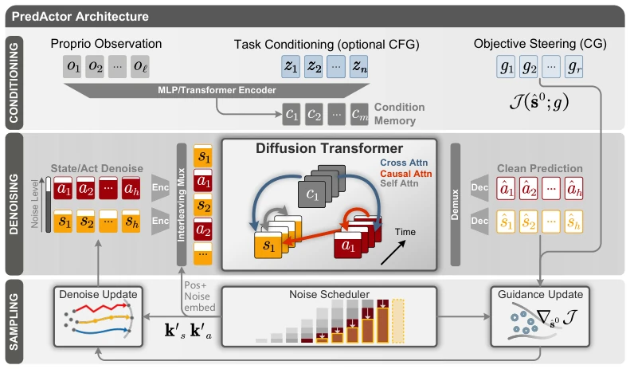
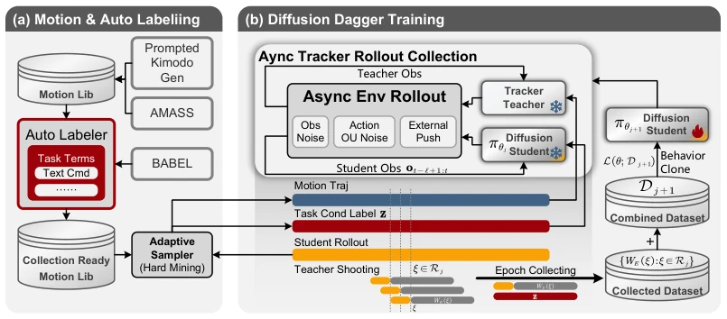
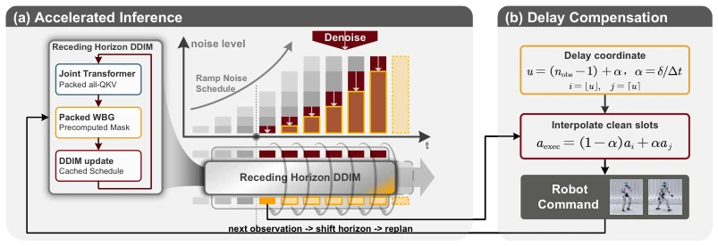
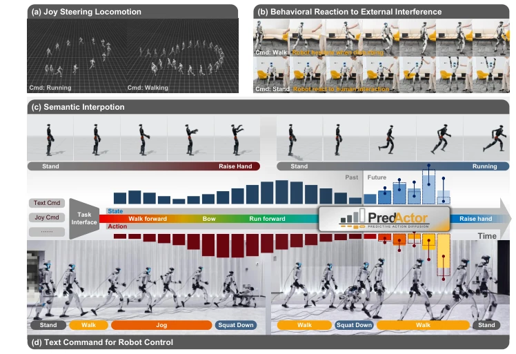
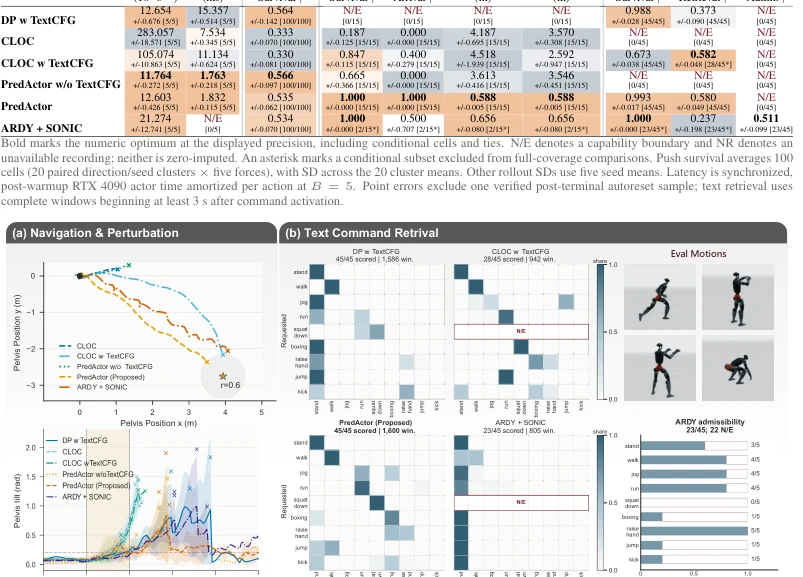
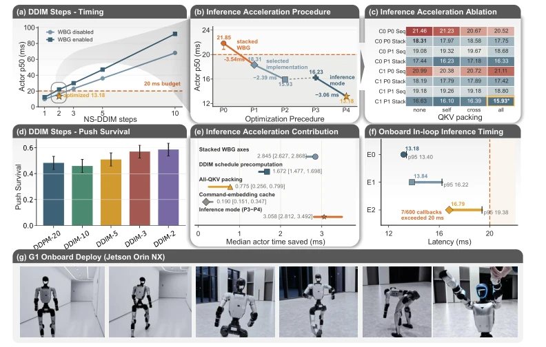
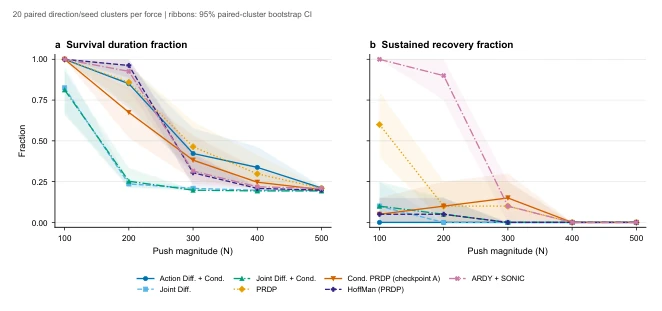

PredActor attempts to equip diffusion models with a "steering wheel" by "predicting future states"; this approach is theoretically attractive, as generating actions without trajectories is like driving with eyes closed when encountering unexpected situations. It successfully achieved 50Hz control on the Unitree G1, which is commendable, as many papers only dare to brag in simulations. But don't get too excited too soon; it still relies on pre-trained Teachers and the DAgger process, and this "teacher teaching student" routine often fails to adapt in the real world. Moreover, although it claims to achieve "controllability", essentially it still forces planning and control into a single network, not truly solving the hard drawback of slow diffusion model sampling, but merely squeezing into the 20ms window through various engineering optimizations (such as caching, batching). If it cannot handle more complex unstructured environments in the future, this "controllability" might just be "controllable" in the laboratory.
研究动机Motivation
现有扩散策略主要面临两大痛点：一是纯动作扩散（Action-only Diffusion）缺乏显式未来状态轨迹，导致无法利用分类器引导（CG）进行实时运动目标修正（Chi et al., 2023）；二是联合状态 - 动作扩散（Joint State-Action Diffusion）往往依赖全身体状态的先验知识（Privileged States），导致仿真到真实迁移困难（Huang et al., 2025b; Carroll et al., 2026）。此外，现有的分层系统（Generator-Tracker）将规划与控制分离，导致动态不可行和同步延迟问题（Xie et al., 2026; Zhao et al., 2026）。PredActor 旨在解决这一矛盾：如何在仅使用本体感知（Proprioceptive）观测的情况下，构建一个直接执行的动作策略，同时保留通过内部状态预测进行实时引导（Steering）的能力，并实现真正的机载部署。
Existing diffusion policies mainly face two major pain points: first, Action-only Diffusion lacks explicit future state trajectories, leading to an inability to utilize Classifier Guidance (CG) for real-time motion target correction (Chi et al., 2023); second, Joint State-Action Diffusion often relies on full-body state prior knowledge (Privileged States), leading to difficulties in sim-to-real transfer (Huang et al., 2025b; Carroll et al., 2026). Additionally, existing hierarchical systems (Generator-Tracker) separate planning and control, leading to dynamic infeasibility and synchronization latency issues (Xie et al., 2026; Zhao et al., 2026). PredActor aims to resolve this contradiction: how to construct a direct-execution action policy using only Proprioceptive observations, while retaining the ability for real-time Steering through internal state prediction, and achieving true onboard deployment.
PredActor is a policy framework based on joint state-action diffusion. The overall process is divided into three stages: data construction, training, and rolling inference. First, reference trajectories are generated using a motion library and auto-labeling; an initial dataset is generated under noise and interference via a frozen Tracker Teacher, and DAgger-style iterative training is adopted, where the student policy accesses states and the teacher supplements trajectory targets to cover out-of-distribution states (Figure 4). In terms of core architecture, the model receives proprioceptive history sequences and optional task context (such as text), generates conditional memory via a Transformer encoder, and then jointly denoises future state sequences and action sequences (Figure 3). The innovation lies in introducing two guidance mechanisms: Classifier-Free Guidance (CFG) is used to enhance text-conditioned behavior, while Classifier Guidance (CG) utilizes gradients of predicted states to push future trajectories toward test-time goals (such as navigation points). In the deployment phase, a Rolling Denoising mechanism is adopted to reuse partially denoised trajectories across control cycles, avoiding repeated sampling, combined with engineering optimizations such as all-QKV packing and cached condition embeddings, compressing inference latency to within 20ms (Figure 5).

Figure 3: Joint predictive architecture of PredActor. Observation history and task commands condition a transformer that jointly denoises interleaved future state and action tokens. Optional steering modifies the predicted state while passing the predicted action through unchanged to the denoising update; only an action is executed.

Figure 4: Data and training pipeline. Generated and annotated motion references drive asyn- chronous tracker rollouts. The resulting deployable observations and task labels condition joint state–action training. Teacher trajectory shooting supplies trajectory targets at student-visited states, which are aggregated for subsequent training.

Figure 5: Rolling inference and delay compensation. Schedule-matched samples are shifted and replanned after each observation. A delay coordinate interpolates adjacent clean action slots before execution.
Experiments were validated on MuJoCo simulation and Unitree G1 real robots. Baselines include Diffuse Policy w/ TextCFG, CLOC, ARDY+SONIC, etc. Evaluation metrics cover Push Survival, Navigation Arrival Rate, Text Retrieval Accuracy, and Inference Latency. Results show that PredActor achieved 100% arrival rate in 15 target point navigation, text retrieval score 0.580 (better than baseline's 0.373), and Push Survival was comparable to baseline (0.535 vs 0.564). On Jetson Orin NX, after optimization, median latency was 16.79ms, 95th percentile 19.38ms, successfully meeting the 50Hz control cycle (Figure 7). Ablation studies indicate that two-step DDIM sampling and engineering optimizations contribute significantly to performance improvement. Real robot demonstrations showcased text control, joystick steering, and anti-interference capabilities, proving its onboard feasibility.

Figure 1: Qualitative demonstrations of PredActor. (a) Joystick steering redirects walking and run- ning; (b) PredActor responds to external interference during walk and stand commands; (c) semantic interpolation connects standing with raising a hand and with running; and (d) text commands trigger stand, walk, jog, and squat sequences.

Figure 6: MuJoCo evidence for steering, recovery, and text control across six policies. (a) Representative destination trajectories in the common protocol frame (top; the star is the target and the circle marks the 0.6 m arrival threshold) and direction-matched pelvis tilt under a 300 N push (bottom; lines are means, bands show sample SD, and crosses mark early terminals) across 20 paired direction/seed cells per policy. (b) Per-class raw MotionCLIP top-1 retrieval for each evaluable policy, example evaluation motions, and ARDY+SONIC reference admissibility by requested class. Missing cells remain distinct from zero; 22/45 ARDY references are rejected before SONIC rollout. Table 2 aggregates all 100 push cells per policy and reports each selected metric, denominator, and capability boundar

Figure 7: Two-step inference meets the 50 Hz p95 budget on Jetson Orin and enables onboard G1 deployment. (a) Sampler-budget sweep. (b) Measured path through P0–P4: original Torch- Script actor, cache-capable TorchScript re-export, factorially selected exact configuration, runtime- suite remeasurement, and LibTorch inference mode. (c) Exact two-forward implementation matrix. Within this panel, C0/C1 and P0/P1 denote condition caching and schedule precomputation dis- abled/enabled, while Seq/Stack denotes sequential/stacked WBG axes. (d) Push survival across the tested sampler budgets. (e) Matched implementation contributions, which are nonadditive. (f) The p50–p95 intervals for E0 (actor with fixed input), E1 (actor after new robot-state receipt and conver- sion), and E2 (complete callback
其他图片Other Figures

Figure 8: Architecture survival and recovery over all tested push magnitudes. Each point con- tains 20 paired direction/seed cells; ribbons are descriptive 95% paired-direction cluster-bootstrap intervals from 20,000 replicates. Lines guide the eye. The aggregate values in Table 2 retain all five forces within each of the 20 paired clusters.